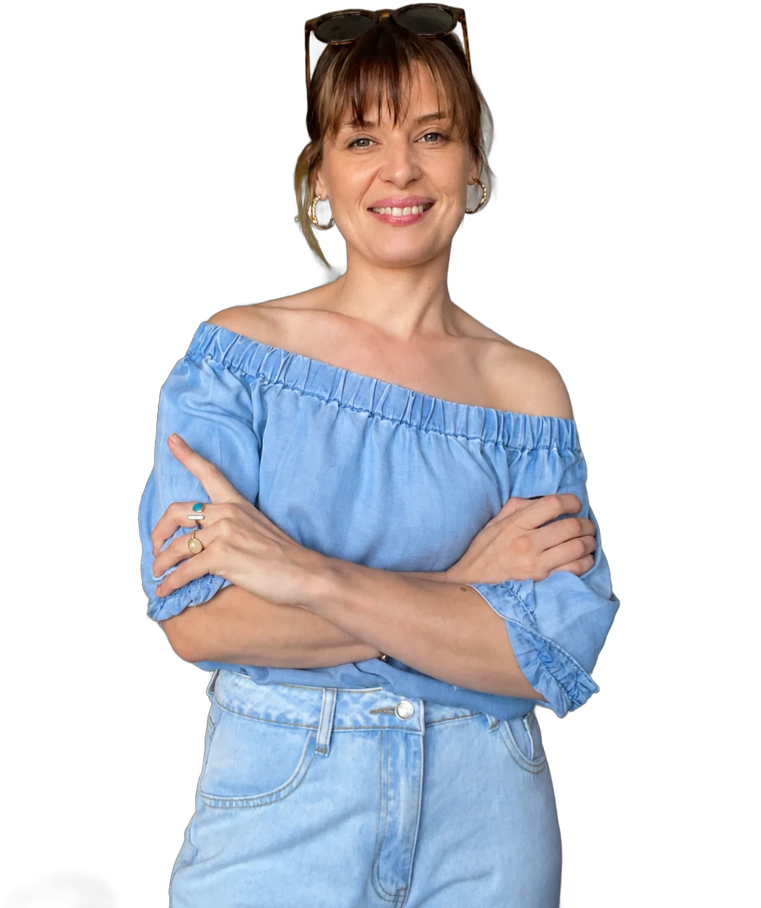
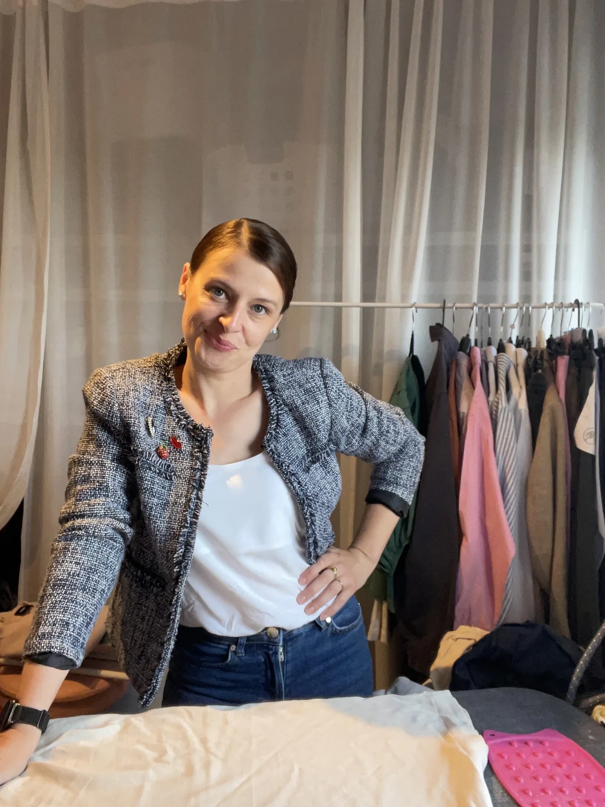
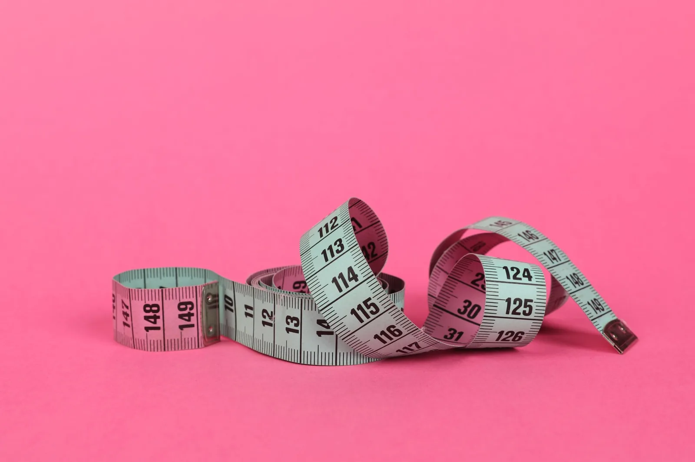
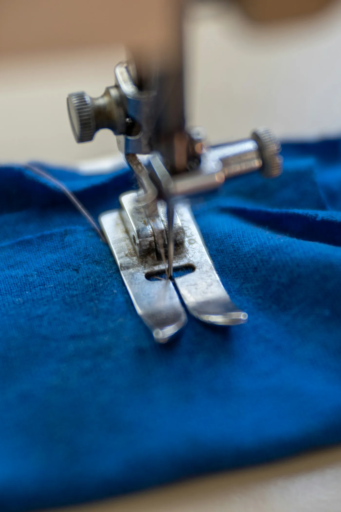

Het pastweer.
Broek te lang, jurk te ruim, rits kapot? Breng het binnen in de Kortrijksestraat. We bekijken samen wat het nodig heeft en ik maak het netjes in orde.


Wat ik aanpas
Van zoom tot rits.
Een kleine herstelling of een grote aanpassing: ik zorg dat je kledingstuk weer zit zoals het hoort, met respect voor hoe het gemaakt is.
Zodat het past
- Broeken inkorten
- Jeans met originele zoom
- Taille versmallen
- Pijpen versmallen
- Jurken inkorten
- Jurken innemen
- Mouwen inkorten
- Jassen en mantels
- Feestkleding
- Ritsen vervangen
Zodat het blijft
- Scheuren
- Losgekomen naden
- Knopen
- Voeringen
- Ritsen
- Slijtage
Werkwijze
Zo gaat het.
- 01
Binnenbrengen
Je brengt je kledingstuk naar het atelier in de Kortrijksestraat.
- 02
Bespreken
We bekijken samen wat er moet gebeuren, zodat je weet wat je mag verwachten.
- 03
Retouche
Ik werk het zorgvuldig af, zo mooi en onzichtbaar mogelijk.
- 04
Ophalen
Je krijgt een berichtje zodra het klaar is.


Naald, draad
en een meetlint.
Een kledingstuk herstellen in plaats van vervangen. Dat is goed voor je portemonnee en je favoriete stuk gaat jaren langer mee.



Van je jeans tot je feestjurk: elk stuk krijgt dezelfde zorg.
Reviews op Google
Wat klanten zeggen.
Heel warm en professioneel. Mijn mantel past nu perfect!
Vlotte en klantvriendelijke behandeling. Niets is te veel, altijd vriendelijk en behulpzaam. Het werk wordt kwalitatief uitgevoerd.
Al verschillende retouches laten uitvoeren en telkens super tevreden ! Heel vriendelijk , heel correct ! Een aanrader !
Ik heb hier al meerdere broeken laten inleggen & ben elke keer opnieuw heel tevreden, zeker een aanrader!
Retouche aanvragen
Vertel wat er moet gebeuren.
Vul het kort in en je bericht staat meteen klaar in WhatsApp. Jij kijkt het na en drukt zelf op verzenden.
Liever meteen een moment kiezen?Boek je afspraak onlineLangskomen
Het atelier.
Kortrijksestraat 18 bus 2
8020 OostkampJe vindt me tussen Carrefour Express en Slagerij De Fruyt.
Openingsuren
- Maandaggesloten
- Dinsdag09:00 · 19:00
- Woensdag09:00 · 11:00
- Donderdag09:00 · 19:00
- Vrijdag09:00 · 19:00
- Zaterdag09:00 · 11:00
- Zondaggesloten
Een afspraak maak je online of via WhatsApp.